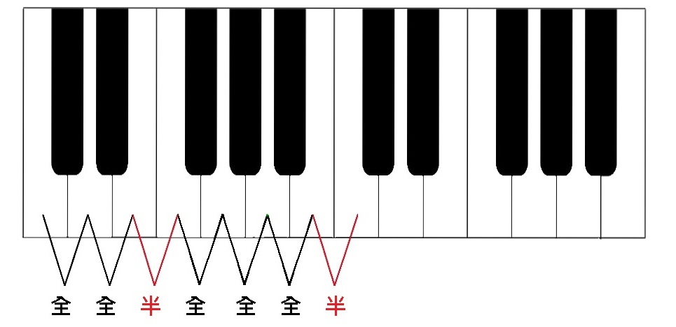
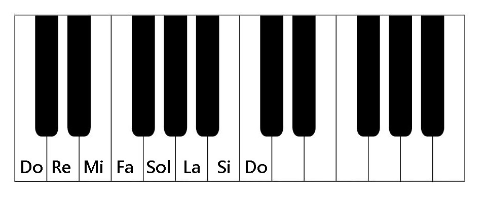
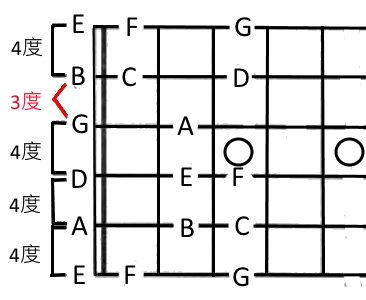
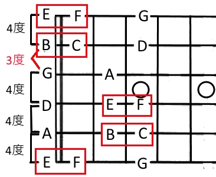
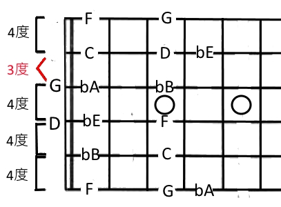
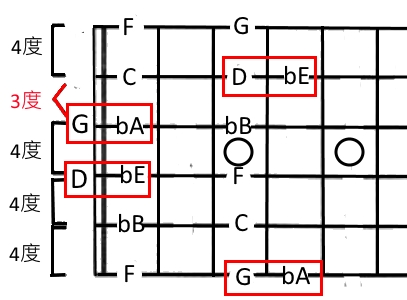

我們在聽音樂時，常常可以發現，有的聽起來很悲傷、陰沉、壓抑；而有的則是開朗、明亮。這都是因為大小調的聽覺差異所造成的。
例如，同一個旋律我們分別用大小調彈奏出來會有不同的感受：
我們平常所聽到的「Do, Re, Mi, Fa, Sol, La, Si(Ti), Do」，就是一個很典型的大調音階，我們可以很簡單的認識出「Do, Re, Mi, Fa, Sol, La, Si(Ti), Do」，
是因為他們彼此之間有固定的排列組合，如果這個排列組合用全音半音的概念來劃分的話，便是「全全半全全全半」。
這一個音階，在鋼琴上最容易看出來：


其中，半音的意思，便是這兩個音(琴鍵)，彼此相鄰，中間沒有其他的音。而全音，則是兩個相鄰的半音組成，我們稱這個為全音。
而這一音階，放到吉他上的來看，就是這個樣子(第一把位上)：

這就是大調音階在吉他指板上的樣貌。
我們可以很明顯地看到，每遇到半音的地方，他的下一個音就在指板上的下一格。
反之，若是全音，則兩個音之間會間隔一個空格，如下圖所示：

在知道大調是甚麼以後，解釋小調就很簡單了。
小調就是將大調的第3、6、7個音給降半音，也就是：
「Do, Re, 降Mi, Fa, Sol, 降La, 降Si(Ti), Do」
而這一音階，放到吉他上的來看，就是這個樣子(第一把位上)：

跟大調的「全全半全全全半」相比，
小調則是「全半全全半全全」。

所謂音名，就是音樂上使用的音符名稱。
而唱名則是我們學習歌曲時，所唱音符的名稱。
而唱名又可以分成以下兩種：
1.固定唱名法
即固定Do的唱名法，所有的大、小調都以C大調音級的唱名讀譜。換句話說，在任何情況，C都是Do。
2.首調唱名法
將所有大調的主音都唱成Do；小調的主音都唱成La的方法。也是簡譜所使用的唱譜方法。
例如在G大調中，我們會將G念成Do。
接下來讓我們來介紹主音。
大小調音階的第一個音，為主音。主音的音名即為調名，例如升F大調的主音就是F#。
使用下面的小工具能夠讓我們更快的理解。利用下拉式選單選擇大調的主音，
則輪盤內圈的唱名相對於外圈的音名就是首調唱名法。
可以注意到，大調的「全全半全全全半」和小調的「全半全全半全全」都是固定的。
˄